방송통신기사 (2010-10-10 기출문제)
1과목: 디지털 전자회로
1. 다음 그림은 정류회로의 입력파형과 출력파형을 나타내었다. 이와 같은 입출력 특성을 만족시키는 정류회로는? (단, 다이오드의 장벽전압은 0.7[V]이고, 변압기의 권선비는 1:1이라고 가정한다.)
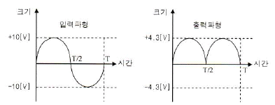
- 반파정류회로
- 중간탭 전파정류회로
- 브리지 전파정류회로
- 용량성 필터를 갖는 반파정류회로
(정답률: 21%)

2. 다음과 같은 용량성 커패시터를 이용한 평활회로의 특징으로 옳지 않은 것은?
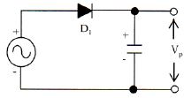
- 정류파형의 주파수가 높을수록 맥동률은 적어진다.
- 부하저항이 클수록 맥동률은 적어진다.
- 정류파형의 주파수는 맥동률과 무관하다.
- 커패시터 용량값이 클수록 맥동률은 적어진다.
(정답률: 49%)
3. 그림과 같은 평활회로에서 출력 맥동률을 최소화하기 위한 방법으로 옳은 것은?
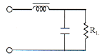
- L과 C값을 적절하게 감소시킨다.
- L값은 증가, C값은 감소시킨다.
- L값은 감소, C값은 증가시킨다.
- L과 C 값을 적절하게 증가시킨다.
(정답률: 53%)
4. 다음 주어진 회로의 직류 부하선로로 적절한 것은?
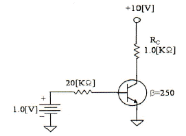
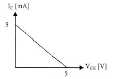
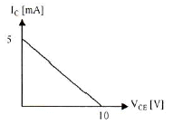
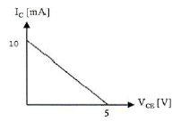
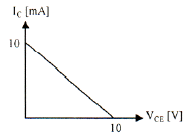
(정답률: 45%)
5. 다음 주어진 회로는 JFET 증폭기이다. 게이트-소스 전압이 VGS=-1.4[V], 드레인-소스전압 VDS=4.5[V], 드레인 전류 IDS=10[mA]일 때 드레인 저항 RD 와 소스 저항 RS는?
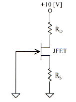
- RD=410[Ω], RS=240[Ω]
- RD=410[Ω], RS=140[Ω]
- RD=310[Ω], RS=140[Ω]
- RD=310[Ω], RS=240[Ω]
(정답률: 43%)
6. 그림과 같은 부궤환 증폭기 회로의 폐루프(closed-loop) 이득은? (단, 증폭기의 증폭도는 무한대(∞)이다.)
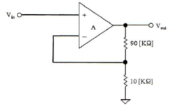
- 10
- 0.1
- 11
- 1.1
(정답률: 32%)
7. 다음과 같은 연산증폭기 회로의 출력 전압은?
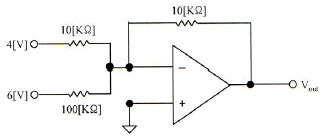
- - 64[V]
- - 4.6[V]
- +64[V]
- +4.6[V]
(정답률: 48%)
8. 발진회로를 구성하는 요소가 아닌 것은?
- 증폭회로
- 정궤환회로
- RC 타이밍회로
- 감쇄회로
(정답률: 54%)
9. 인가되는 역전압 직류전압에 의해 커패시턴스 성분이 가변되는 소자를 이용하여 발진주파수를 가변하는 발진회로는?
- 윈-브리지 발진회로
- 위상천이 발진회로
- 전압제어 발진회로
- 비안정멀티바이브레이터
(정답률: 37%)
10. 정보 전송 기술에서 다음 그림과 같은 변조 파형을 얻을 수 있는 변조 방식은?
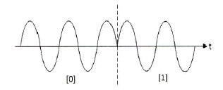
- ASK
- PSK
- FSK
- QASK
(정답률: 47%)
11. 다음 그림의 변조기는 어떤 방식을 나타내는가?
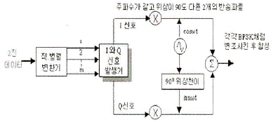
- PSK
- QPSK
- DPSK
- PCM
(정답률: 53%)
12. R-C 회로의 출력에서 최종치의 10[%]~90[%]까지 얻는데 소요되는 시간을 무엇이라 하는가?
- 지연 시간
- 하강 시간
- 상승 시간
- 전이 시간
(정답률: 59%)
13. R-L 회로에서 시정수는 어떻게 정의하는가?
- RL
- L/R
- R/L
- 1/(RL)
(정답률: 58%)
14. 2진수 1110의 2의 보수는?
- 1010
- 1110
- 0001
- 0010
(정답률: 50%)
15. 논리식
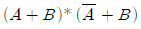
를 간단히 하면? (단, *는 AND 연산임.)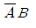
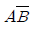
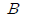
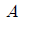
(정답률: 47%)
16. JK-Flip Flop에서 J입력과 K입력이 모두 1이고 CP=1일 때 출력은?
- 출력은 반전한다.
- Set 출력은 1, Reset 출력은 0이다.
- Set 출력은 0, Reset 출력은 1이다.
- 출력은 1이다.
(정답률: 47%)
17. 5비트 2진 카운터의 입력에 4[MHz]의 정방향 펄스가 가해질 때 출력 펄스의 주파수를 구하면?
- 25[kHz]
- 50[kHz]
- 250[kHz]
- 125[kHz]
(정답률: 36%)
18. 반감산기를 구현할 때 빌림수 B를 얻기위한 논리식은? (단, X는 피감수이며, Y는 감수이고, *는 AND 연산을, '는 NOT 연산임.)
- X'*Y'
- X*Y
- X'*Y
- X*Y'
(정답률: 39%)
19. 그림의 코드 변환회로의 명칭은?
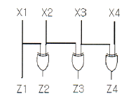
- BCD-GRAY 코드변환기
- BCD-2421 코드변환기
- BCD-3초과 코드변환기
- BCD-9의 보수변환기
(정답률: 54%)
20. 십진 BCD 코드가 LED 출력으로 표시시키려면 어떤 디코더 드라이브가 필요한가?
- BCD-10세그먼트
- Octal-10세그먼트
- BCD-7세그먼트
- Octal-7세그먼트
(정답률: 63%)
2과목: 방송통신 기기
21. 다음 중 컴퓨터상에서 다수의 인원이 동시에 영상을 편집하는데 가장 적합한 디지털 편집 시스템은?
- LE(Linear Editor)
- Betacam VCR
- NLE(Non Linear Editor)
- Playout Server
(정답률: 67%)
22. 음향 편집 기법 중 음량을 제로(0) 레벨에서 서서히 소정의 레벨까지 올리는 것을 무엇이라 하는가?
- 페이드 인(fade in)
- 페이드 아웃(face out)
- 컷(cut)
- 디졸브(dissolve)
(정답률: 81%)
23. 다음 스튜디오 설비 중 임계치 이하의 레벨은 통과시키지 않는 것은?
- 노이즈 게이트(Noise Gate)
- 익스팬더(Expander)
- 리미터(Limiter)
- 이퀄라이저(Equalizer)
(정답률: 75%)
24. 다음 중 주파수변조의 장점이 아닌 것은?
- 레벨 변동에 강함
- 주파수 변동에 강함
- 진폭변조에 비해 잡음이나 혼신에 강함
- S/N비가 개선됨
(정답률: 53%)
25. 다음 중 PLL 구성 요소와 관계가 없는 것은?
- 위상 비교기
- 저역통과 여파기
- 증폭기
- 고역통과 여파기
(정답률: 55%)
26. 다음 중 강한 음성입력에 의해 위상 피변조파의 주파수 변화가 순간적으로 과대하게 되는 것을 방지하는 회로는?
- 프리엠퍼시스 회로
- 순시 주파수 편이 제어(IDC) 회로
- 자동 주파수 편이(AFC) 회로
- 지연 이득 제어 회로
(정답률: 60%)
27. 다음 중 텔레비전의 전파에 관한 내용으로 거리가 먼 것은?
- 우리나라의 TV 방송 채널의 주파수 할당은 VHF(30~300[MHz])와 UHF(300~3,000[MHz])가 사 되고 있다.
- TV의 전파는 영상전파와 음성전파로 이루어진다.
- 영상과 음성 상호간의 영향을 최소로 하기 위하여 영상전파는 FM을 음성전파는 AM을 채용하고 있다.
- 색신호의 전송은 약 3.5[MHz]의 색부반송파를 사용해서 반송파억압 2상 변조방식으로 다중전송을 한다.
(정답률: 65%)
28. 아날로그 컬러 TV 방송 방식 중 PAL 방식의 설명으로 적합한 것은?
- 프랑스에서 개발하여 주로 동유럽에서 채택하고 있다.
- 휘도신호에다 두 개의 색차신호(I, Q 신호)를 3.58[MHz]의 색부반송파로 전송하는 방식이다.
- 두 개의 색차신호 중 하나의 위상을 주사선마다 180도씩 반전시켜 전송하는 방식이다.
- 두 개의 색차신호를 동시에 전송하지 않고 각 주사선마다 순차적으로 교체하면서 색부반송파를 주파수변조하여 전송하는 방식이다.
(정답률: 53%)
29. 텔레비전(NTSC-TV)의 음성전파와 영상전파의 관계가 옳은 것은?
- 음성전파와 영상전파는 같다.
- 음성전파는 영상전파보다 4.5[MHz] 낮다.
- 음성전파는 영상전파보다 4.5[MHz] 높다.
- 음성전파는 영상전파의 1/2이다.
(정답률: 60%)
30. 다음 중 스위처에서 얻어진 다양한 휘도 및 색도에 의해 원하는 부분을 키잉(keying)할 수 있는 은 무엇인가?
- 매트 키(matte key)
- 크로마 키(chroma key)
- 리니어 키(linear key)
- 루미넌스 키(luminance key)
(정답률: 57%)
31. 다음 중 방송위성으로 사용되는 인공위성은?
- 저궤도위성(LEO)
- 중궤도위성(MEO)
- 정지궤도위성(GEO)
- 궤도이동위성(MSS)
(정답률: 70%)
32. 다음 중 방송수신용 안테나 중에 위성방송 수신에 가장 적합한 안테나는?
- LP 안테나
- 야기 안테나
- 무지향성 안테나
- 파라볼라 안테나
(정답률: 63%)
33. CATV 방송국에서 아날로그 방송신호를 직접 측정 또는 시험하기 위하여 갖추어야 할 장비에 속하지 않는 것은?
- 파형 분석기
- 벡터스코프
- TV 신호 발생기
- 비트에러 측정기
(정답률: 55%)
34. 전송신호가 111111111일 때 여기에 PN(Pseudo Noise) 신호 100101010을 가하면 출력 신호 값은?
- 11111111
- 100101010
- 011010101
- 100101011
(정답률: 78%)
35. 매체별 압축 기술 또는 표준으로 맞지 않는 것은?
- 문서는 RLC, 정적/동적 Huffman 부호, Arithmetic 부호 등을 이용
- 정지영상은 GIF, RLC, JPEG을 이용
- 동영상은 H.261, H.263, MPEG-1, MPEG-2, MPEG-4 등을 이용
- 음성, 음향은 MPEG-1, AAC, Lempel-Ziv 부호 등을 이용
(정답률: 49%)
36. 디지털방송의 편집 환경에서 사용되는 스토리지를 기능적 특징으로 분류하였을 때 속하지 않는 스토리지는?
- 공유 스토리지
- 검색 스토리지
- 아카이브 스토리지
- IP서비스와 스트리밍 스토리지
(정답률: 64%)
37. ATSC의 데이터방송 기술표준은?
- ACAP(Advanced Common Application Platform)
- OCAP(OpenCabe Application Platform)
- DCAP(DTV Common Application Platform)
- MHP(Multimedia Home Platform)
(정답률: 58%)
38. 직선 휘도가 왜곡되었을 때 몇 개의 주파수 신호를 수평주사 기간에 순서대로 나열하여 주파수 특성을 알아보는 측정법은?
- 주파수 플롯트법
- 소인법
- 멀티버스트 신호법
- 브리지법
(정답률: 60%)
39. 다음 중 스펙트럼 분석기(Spectrum Analyzer)의 측정 대상과 거리가 먼 것은?
- 험과 저주파 왜곡 성분
- 영상 및 음성 반송파의 크기와 주파수
- 혼 변조
- 피크전압의 리플
(정답률: 63%)
40. 음향의 성질로 맞게 설명된 것은?
- 소리의 크기, 소리의 높이, 음색, 지속 시간의 4가지 속성을 사용
- 소리의 크기는 주로 주파수에 의해 결정된다.
- 소리의 음색은 주로 음압 레벨에 의존한다.
- 소리의 높이는 주포 스펙트럼 파형에 의해 결정된다.
(정답률: 66%)
3과목: 방송미디어 공학
41. 라디오 프로그램에 청취자의 직접적으로 참여가 핵심인 포맷의 채널 유형은?
- 음악전문채널
- 뉴스전문채널
- 시사전문채널
- 토크전문채널
(정답률: 65%)
42. TV의 3요소에 해당되지 않는 것은?
- 화소
- 주사
- 동기
- 조명
(정답률: 69%)
43. 다음 중 TV 음성다중 방송의 방식에 속하지 않는 것은?
- 2 carrier 방식
- AM-FM 방식
- AM-AM 방식
- FM-FM 방식
(정답률: 47%)
44. 음향기기에서 장비와 기능이 서로 맞지 않는 것은?
- 마이크로폰 - 수음 및 인코딩 장비
- 이퀄라이저 - 분배 및 전송장비
- CD 플레이어 - 저장 장비
- 오디오 앰프 - 수음 출력 증폭장비
(정답률: 60%)
45. 스테레오 포닉 방송을 하는 경우 모노 포닉 방송의 경우와 양립성을 갖도록 하기 위한 조건 중 틀린 것은?
- 주ㆍ부 채널 신호 및 파일럿 신호로서 주반송파를 변조한다.
- 부반송파는 진폭변조하고 억압한다.
- 주반송파의 주파수편이는 최대치가 ±75[kHz]의 45[%]를 넘지 않도록 한다.
- 파일럿 신호에 의한 주반송파의 주파수편이는 최대 주파수편이(±75[kHz])의 5[%] 내지 8[%]이어야 한다.
(정답률: 58%)
46. 잔향이 많은 실내에서 명료도를 높이는 방법이 아닌 것은?
- 실내의 잔향 시간을 짧게 한다.
- 실내의 임계거리가 길어지도록 한다.
- 스피커의 지향성이 좁은 것을 사용한다.
- 스피커를 여러 개 조합하여 사용한다.
(정답률: 68%)
47. NTSC 방송방식에서 휘도성분의 주파수 범위와 크로미넌스 성분의 주파수 범위가 바르게 된것은?
- 휘도성분 주파수: 4.2[MHz], 크로미넌스성분 주파수: 3.58[MHz]
- 휘도성분 주파수: 3.58[MHz], 크로미넌스성분 주파수: 4.2[MHz]
- 휘도성분 주파수: 4.5[MHz], 크로미넌스성분 주파수: 6[MHz]
- 휘도성분 주파수: 6[MHz], 크로미넌스성분 주파수: 4.5[MHz]
(정답률: 49%)
48. 다음 중 유선방송의 구내전송 설비에서 시청가입자의 TV수상기 입력단자가 300[Ω]인 경우에 동케이블의 75[Ω] 불평형 신호를 300[Ω] 평형신호로 변환하는데 이용되는 기기로 가장 적절한 것은?
- 탭오프(Tap off)
- 보안기
- 정합기
- 신호증폭기
(정답률: 60%)
49. NTSC TV방식에서는 R-Y, B-Y를 I와 Q로 좌포축을 변환한 색차를 이용한다. 이 경우 R-Y와 I축과 이루는 위상차는?
- π/2
- 33°
- 90°
- 145°
(정답률: 50%)
50. 유선 브로드밴드(IP망 기반)를 통해 가입자에게 비디오를 전송하는 서비스를 총칭하며 PP, CP에게서 받은 프로그램을 인터넷망을 통하여 가입자에게 전송해 주는 뉴미디어 서비스는?
- CATV
- 위성TV
- IPTV
- 초고속인터넷서비스
(정답률: 70%)
51. 현대 모바일 TV 미디어에 속하지 않는 것은?
- MMS
- DMB
- DVB-H
- MediaFLO
(정답률: 54%)
52. 국내 지상파 DMB의 사용주파수대는?
- 204[MHz]~216[MHz]
- 204[MHz]~210[MHz]
- 174[MHz]~210[MHz]
- 174[MHz]~216[MHz]
(정답률: 66%)
53. 다음 중 오디오 파일 포맷이 아닌 것은?
- ASF
- RA
- AIFF
- TIFF
(정답률: 68%)
54. 우리나라 디지털 TV방송의 오디오 압축방식인 Dolby AC-3에 대한 설명이 바르지 않은 것은?
- 5.1 포맷은 기존의 스테레오 채널(Left, Right)에 6개의 채널이 추가로 구성된 것이다.
- 5개의 메인채널과 주로 저음 영역을 담당하는 LFE(Low Frequency Effects) 채널, 이렇게 6개로 구성된다.
- 메인채널의 주파수 재생영역은 3[Hz]~20[kHz] 로, LFE 채널은 3[Hz]~120[Hz]로 주파수 영역 이 제한된 채널이다.
- 5.1에서 “5”는 5개의 메인채널을 뜻하고, “1”은 LFE를 뜻하며 메인채널 주파수의 1/10을 재생한다.
(정답률: 62%)
55. 다음 중 전자악기에서 사용하는 표준 파일형식을 지칭하는 용어는?
- WAV
- MP3
- MIDI
- CDA
(정답률: 62%)
56. 국내 IPTV에서 사용되고 있는 동영상 압축 기술 표준은 무엇인가?
- MPEG-2
- H.261
- H.263
- H.264
(정답률: 65%)
57. 현재 TV 프로그램의 경우 5.1CH을 담기 위한 6개의 오디오 채널과 기존의 스테레오 2개 채널 등 모두 8개의 오디오 채널을 2개의 데이터 스트림으로 압축하는 것은?
- Dolby B
- Dolby C
- Dolby D
- Dolby E
(정답률: 55%)
58. 영상신호 압축의 원리는 영상신호에 내재되어 있는 각종 중복성을 제거하는 것이다. 다음 중 영상신호 압축을 위한 주요 제거요소로 가장 거리가 먼 것은?
- 색신호간 중복성 제거
- 공간적 중복성 제거
- 시간적 중복성 제거
- 비통계적 중복성 제거
(정답률: 57%)
59. MPEG의 화상 데이터 구성요소가 아닌 것은?
- I 픽쳐
- S 픽쳐
- P 픽쳐
- B 픽쳐
(정답률: 67%)
60. 우리나라 지상파 DTV의 입력 음향 신호 샘플링 주파수 및 음향 신호 압축 방식이 올바르게 짝지워진 것은 어느 것인가?
- 48[kHz], AC-3
- 48[kHz], AAC
- 44.1[kHz], AC-3
- 44.1[kHz], AAC
(정답률: 50%)
4과목: 방송통신 시스템
61. 주파수 영역에서 신호의 스펙트럼이 겹쳐서 원래 신호의 정상 복원이 불가능해지는 것을 무엇이라고 하는가?
- 수신기 비트에러
- 수신기 잡음
- 산탄잡음
- 에일리어싱
(정답률: 73%)
62. 다음 각국의 TV 방송 방식과 연결이 잘못된 것은 어느 것인가?
- 미국 - NTSC
- 독일 - PAL
- 프랑스 - SECAM
- 일본 - PAL
(정답률: 68%)
63. FM 스테레오 방송에 대한 특성으로 잘못된 것은?
- 주채널 신호, 부채널 신호 및 파일럿 신호로 주반송파를 변조한다.
- 파일럿 톤 방식을 이용하여 스테레오 방송시 수신기에서 차신호의 복조를 한다.
- 모노포닉 방송방식에 대해 양립성이 있다.
- 주반송파의 형식은 잔류측파대 진폭변조이고, 최대 주파수편이는 ±75[kHz]이다.
(정답률: 34%)
64. 라디오 슈퍼헤테로다인 수신기의 특징이 아닌 것은?
- 감도와 선택도가 좋다.
- 충실도가 좋다.
- 회로가 복잡하고 조정이 어렵다.
- 광대역에 걸쳐 선택도가 떨어진다.
(정답률: 54%)
65. FM 수신기가 AM 수신기와의 차이점이 아닌 것은?
- 수신주파수 대역폭이 넓다.
- 진폭 제한회로가 있다.
- 주파수 변별회로가 있다.
- 국부 발진회로가 있다.
(정답률: 54%)
66. 아날로그 TV 영상신호 변조에 관한 설명 중 옳지 않은 것은 무엇인가?
- 동기신호 peak에서 반송파의 진폭이 최대가 되는 부극성 변조(negative modulation) 방식을 취한다.
- 밝은 화면에서보다 어두운 화면에서 송신기의 전력소모가 적어진다.
- TV 영상신호 변조방식은 AM 변조방식이다.
- TV 영상신호 변조방식은 음성신호 변조방식과 다르다.
(정답률: 57%)
67. 다음 영상 반송파의 레벨측정 중, 여러 채널의 레벨을 동시에 측정하는 장비로 옳은 것은?
- VU Meter
- 오실로스코프
- 전계강도 측정기
- 스펙트럼 분석기
(정답률: 40%)
68. 다음 중 국내 지상파 디지털방송 표준 방식을 전송/영상/음성 순으로 옳게 나열한 것은?
- 8VSB/MPEG2/AC3
- 8VSB/MPEG2/MPEG2
- QMA/MPEG2/AC3
- QAM/MPEG2/MPEG2
(정답률: 67%)
69. CATV 시스템 구성의 헤드엔드 설비가 아닌 것은?
- 지상파 재송신 시설
- 공중회선 네트워크
- 중계회선 시설
- 모니터 및 제어시설
(정답률: 48%)
70. 다음 중 우리나라에서 사용되는 케이블 TV 유성방송의 전송망 시스템으로 옳은 것은?
- RING 방식
- HFC 방식
- LMDS 방식
- MMDS 방식
(정답률: 68%)
71. 다음 중 유선회선 접속방식 중 폴링선택(Polling Selecting) 방식의 장점으로 옳지 않은 것은?
- 단말이 간단하다.
- 전송데이터의 신뢰성이 크다.
- 중앙처리장치가 간단하다.
- 스케줄링 처리가 가능하다.
(정답률: 50%)
72. 다음 중 위성 디지털 텔레비전의 변조방식은?
- 8VSB
- QPSK
- AM
- FM
(정답률: 65%)
73. 다음 보기에서 설명하는 필터는?
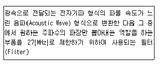
- SAW Filter
- Low Pass Filter
- High Pass Filter
- Band Pass Filter
(정답률: 61%)
74. 다음 설명으로 맞는 안테나는 무엇인가?
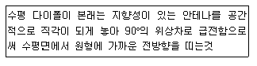
- 무지향성 안테나
- 파라볼라 안테나
- 혼 안테나
- 빔 안테나
(정답률: 55%)
75. 다음 중 디지털송신기에서 순간적으로 발행하는 Burst 신호 간섭으로부터 전송된 신호를 보호하기 위해 데이터 스트림을 분산시키는 기술에 해당하는 것은 무엇인가?
- Randomizer
- R/S Encoder
- Interleaver
- Trellis Encoder
(정답률: 55%)
76. 다음 중 중계방송 중 생중계방송의 전송수단으로 옳지 않은 것은?
- Twist pair 전송방식
- 마이크로웨이브 전송방식
- SNG 전송방식
- 광케이블 전송방식
(정답률: 60%)
77. 다음 중 라디오 방송을 위한 중파 송신설비와 텔레비전 송신설비를 조정하거나 시험하며 고장시 보수를 위해 필요한 장비로 공통적으로 사용되지 않는 장비는?
- 오실로스코프(oscilloscope)
- 파형지연미터(envelope delay meter)
- 왜곡분석기(distortion analyzer)
- 주파수카운터(frequency counter)
(정답률: 42%)
78. 통신접지를 목적으로 접지자재를 선정할 때의 조건이 아닌 것은?
- 영구적일 것
- 높은 임피던스 특성을 가질 것
- 외부에 노출된 자재는 물리적인 강도가 충분할 것
- 매설되는 접지극 및 접지선 등은 특히 내부식성이 강한 규격품
(정답률: 55%)
79. 구내전송선로 설비의 설계시 고려할 사항으로 TV 수신증폭기 장치함의 설치 위치로 적당하지 않는 것은?
- 종합유선방송설비와 구내전송선로설비가 접속되는 종단점
- 공동안테나 시설의 최초 수신개소
- 동축케이블의 분배ㆍ분기 또는 접속을 위하여 필요한 곳
- 함은 계단 또는 복도 등 공용부분에 설치
(정답률: 62%)
80. 다음 괄호 안에 들어갈 용어로 적절한 것은?
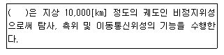
- 저궤도 위성
- 중궤도 위성
- 고궤도 위성
- 극궤도 위성
(정답률: 63%)
5과목: 전자계산기 일반 및 방송설비기준
81. 주기억장치의 용량을 크게 사용하기 위하여 대용량 보조기억장치인 디스크 장치의 용량을 주기억장치와 같이 사용할 수 있도록 하는 장치는?
- 가상기억장치(Virtual Memory)
- 연관기억장치(Associative Memory)
- 캐시 메모리(Cache Memory)
- 보조기억장치(Auxiliary Memory)
(정답률: 64%)
82. 다음 중 16진수 (5E9.7B)16을 8진수로 올바르게 변환한 것은?
- (2851.742)8
- (3752.636)8
- (2746.375)8
- (2751.366)8
(정답률: 52%)
83. 다음 중 2진수 (10010)2을 10진수로 바르게 변환한 것은?
- 17
- 18
- 19
- 20
(정답률: 68%)
84. 다음 중 Parity Bit에 대한 설명으로 틀린 것은?
- 1Bit의 에러를 검출하는 코드이다.
- 2Bit 이상 에러가 발생하면 검출할 수 없다.
- Parity Bit를 포함해서 ‘1’의 개수가 짝수 또는 홀수인지 검사한다.
- ‘1’의 개수를 홀수 개로 하면 짝수 Parity, 짝수 개로 하면 홀수 Parity라 한다.
(정답률: 57%)
85. 다음 중 분산처리 시스템의 장점으로 틀린 것은?
- 보안성 향상
- 자원 공유 증대
- 부하의 균형
- 신뢰성 향상
(정답률: 65%)
86. 병렬 프로세서의 한 종류로 여러 개의 프로세서들이 서로 다른 명령어와 데이터를 처리하는 진정한 의미의 병렬 프로세서로 대부분의 다중 프로세서 시스템과 다중 컴퓨터 시스템이 이 분류에 속하는 구조는?
- SISD(Single Instruction stream Single Data stream)
- SIMD(Single Instruction stream Multiple Data stream)
- MISD(Multiple Instruction stream Single Data stream)
- MIMD(Multiple Instruction stream Multiple Data stream)
(정답률: 71%)
87. 다음의 프로세스 동기화에 대한 설명 중 틀린 것은?
- 상호배제란 공유자원을 어느 시점에서 단지 한 개의 프로세스만이 사용할 수 있도록 하며, 다른 프로세스가 공유 자원에 접근하는 것을 금지하는 원칙을 말한다.
- 상호배제에서 A가 진행중이면 B가 기다리고, A가 끝나면 B가 진행한다.
- 세마포어란 Dijkstra에 의해 고안된 상호배제 및 동기화 문제를 해결하기 위한 문제해결 도구로 상호배제 원리를 보장하는 데 사용된다.
- 여러 프로세스가 동시에 요청하면 시스템이 순서를 결정하여 한번에 하나씩 처리하며 세마포어 연산도중에 인터럽트 되면 인터럽트된 프로세스로 이동한다.
(정답률: 51%)
88. 중앙연산처리장치에서 micro-operation이 순서적으로 일어나게 하려면 무엇이 필요한가?
- 스위치(switch)
- 레지스터(register)
- 누산기(accumulator)
- 제어신호(control signal)
(정답률: 64%)
89. 변조하기 전의 정보를 포함하고 있는 주파수 대역을 무엇이라 하는가?
- 기저대역
- 반송파대역
- 서비스대역
- 영상 대역
(정답률: 63%)
90. 방송시설의 효율적 이용을 위하여 방송시설과 그에 부속된 토지ㆍ건물 등을 공동으로 구축ㆍ이용하도록 권고할 수 있는 기관은 어디인가?
- 문화체육관광부
- 국토해양부
- 방송통신위원회
- 교육과학기술부
(정답률: 62%)
91. 텔레비전 수신료를 면제받을 수 있는 경우가 아닌 것은?
- 국민기초생활보장법에 의한 수급자가 소지한 수상기
- 영업을 목적으로 설치한 수상기 중 1월 이상의 휴업으로 시청하지 아니하는 수상기
- 주거전용의 주택용 전력사용량이 월 100킬로와트 미만인 세대주가 소지한 수상기
- 보건복지가족부에 등록된 시각ㆍ청각 장애인이 생활하는 가정의 수상기
(정답률: 62%)
92. 방송통신위원회가 설치한 무선방위측정 장치의 설치장소에서 몇 km 이내의 지역에 전파를 방해할 우려가 있는 건조물 또는 작물로서 대통령령이 정하는 것을 건설하고자 하는 자는 방송통신위원회의 승인을 얻어야 하는가?
- 1
- 2
- 3
- 4
(정답률: 55%)
93. 아날로그 지상파 텔레비전 방송국의 경우 색신호 부반송파의 주파수 허용편차는?
- 3[Hz] 이내
- 5[Hz] 이내
- 10[Hz] 이내
- 15[Hz] 이내
(정답률: 59%)
94. 디지털 지상파 텔레비전 방송용 무선설비의 기술기준 중 방송신호 표현형식에서 영상신호의 부호화의 설명이 잘못된 것은?
- 영상신호의 표현형식은 지상파 디지털 텔레비전 방송 송수신 정합표준에서 규정하는 조건에 적합할 것
- 휘도신호와 색차신호의 표본당 비트수는 8로 할것
- 영상신호의 형식은 휘도신호(Y) 블록 4개와 색차신호(Cb, Cr) 블록 각 한 개씩으로 구성된 4:2:0 형식으로 할 것
- 프로그램 채널당 영상 부호화 목표 비트율은 최대 20[Mbps]로 할 것
(정답률: 39%)
95. 유선방송국 설비는 매월 방송신호를 측정ㆍ시험하여 그 결과를 기록ㆍ관리하여야 하는데 이에 해당되지 않는 것은?
- 신호파의 신호레벨
- 반송파의 주파수편차
- 전원험 변조도
- 혼변조도
(정답률: 38%)
96. 다음 중 종합유선방송국의 주 전송장치에 입력해야 할 영상신호의 특성 및 질적 수준으로 가장 적합한 것은?
- 사용하여야 할 기저대역주파수는 6[MHz] 범위 안에 있을 것
- 출력 임피던스는 50[Ω] 불평형일 것
- 신호의 바 레벨은 100[IRE]±2[IRE] 이내일 것
- 동기레벨은 100[IRE]±1[IRE] 이내일 것
(정답률: 36%)
97. 다음 중 중계유선방송의 영상반송파의 신호레벨은 수신자설비의 분계점에서 몇 [dBμV]이라야 하는가?
- 45~65[dBμV]
- 55~75[dBμV]
- 65~85[dBμV]
- 75~95[dBμV]
(정답률: 57%)
98. 종합유선방송(아날로그 신호)에서 전송선로 시설의 질적 수준의 측정 항목과 기준값에 대한 설명으로 틀린 것은?
- 영상반송파의 레벨 안정도: 3[dB] 이내(1분간)
- 비인접사용 채널간 영상반송파의 레벨차: 10[dB] 이내
- 영상반송파대 잡음비(C/N비): 36[dB] 이상(주파수 대역 4[MHz]기준)
- 혼변조도: -50[dB] 이하
(정답률: 58%)
99. 공사를 설계한 용역업자는 그가 작성 또는 제공한 실시 설계도서를 당해 공사가 준공된 후 보관기간은?
- 3년 ·
- 4년
- 5년
- 6년
(정답률: 67%)
100. 다음 중 방송법에 의한 방송사업자가 아닌 것은?
- 지상파 방송사업자
- 종합유선 방송사업자
- 방송채널 사용사업자
- 유무선 방송사업자
(정답률: 46%)